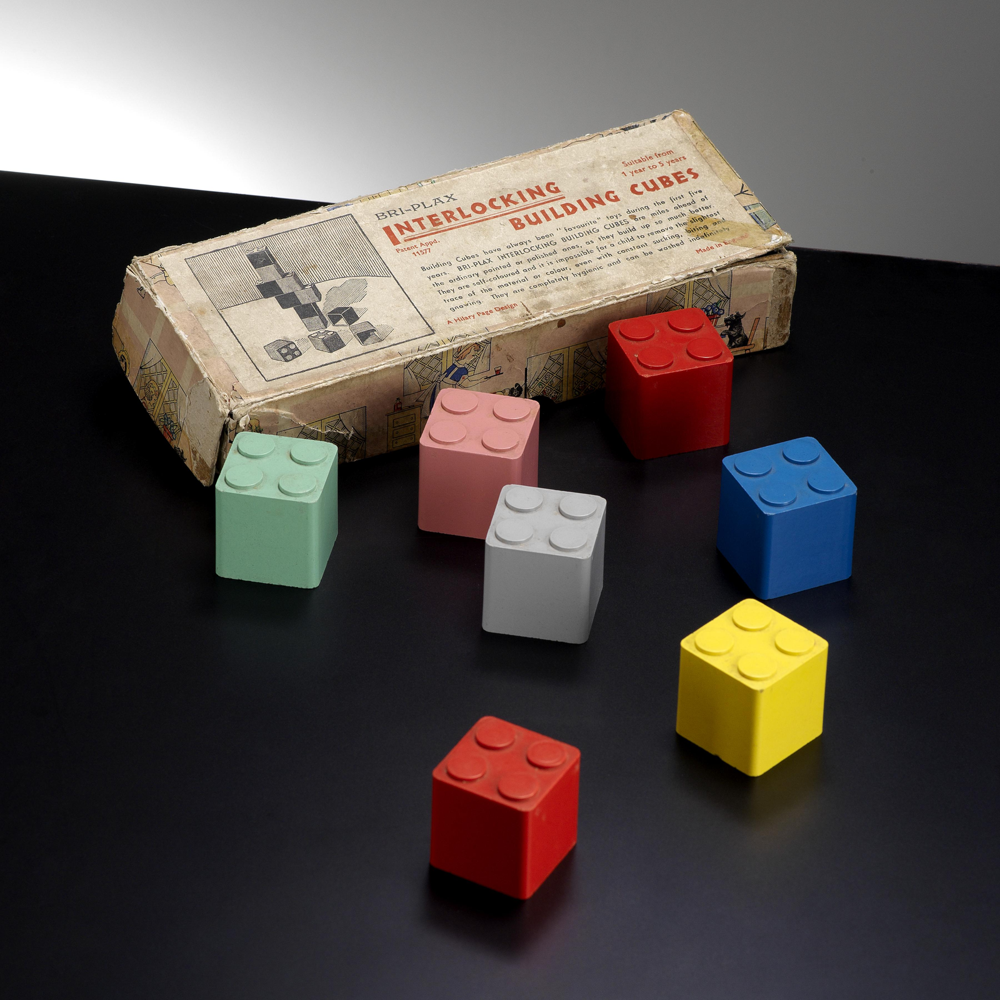
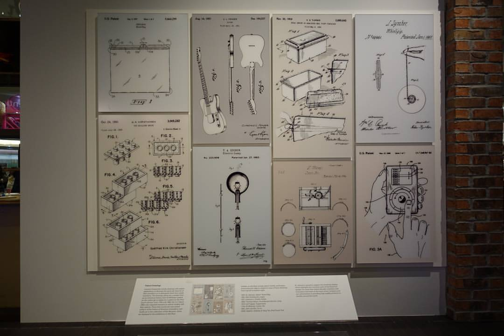
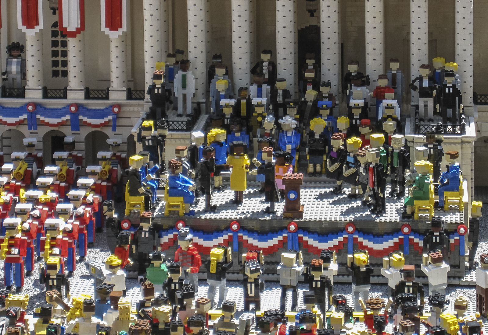

從破產木匠到玩具帝國：樂高差點消失的 3 場大火與逆襲奇蹟！
共 55 幕分鏡 · 預估成片總長度：11分58秒 (718.7s) · 自動生成於 20261008_Lego
🎞️ 各場景分鏡與語音審查
001_shot_1 · 大家好我是白兔
時長: 9.25s

002_shot_2 · 但就是這個不起眼的小塑膠塊
時長: 14.18s

003_shot_3 · 你敢相信嗎
時長: 10.45s

004_shot_4 · 在丹麥日德蘭半島中部
時長: 15.06s

005_shot_5 · 一九三二年
時長: 14.22s

006_shot_6 · 他的妻子因病撒手人寰
時長: 9.65s

007_shot_7 · 看著倉庫裡堆積如山的邊角料
時長: 14.66s

008_shot_8 · 還做了一隻可以用繩子拖著走
時長: 9.81s

009_shot_9 · 在拉丁文裡這個詞碰巧是我拼在一起
時長: 13.86s

010_shot_10 · 然而命運對這個窮木匠的折磨
時長: 9.01s

011_shot_11 · 早在樂高還沒正式成立的一九二四年
時長: 15.46s

012_shot_12 · 好不容易熬過了重建
時長: 15.74s

013_shot_13 · 比隆唯一的樂高工廠
時長: 10.33s

014_shot_14 · 看著漫天飛舞的黑灰
時長: 9.21s

015_shot_15 · 但在親戚的白眼和債權人的逼迫下
時長: 8.81s

016_shot_16 · 二戰結束前後
時長: 15.67s

017_shot_17 · 奧勒聽完勃然大怒
時長: 10.93s

018_shot_18 · 戈德弗雷德只能一個人在冰冷的廠房
時長: 17.46s

019_shot_19 · 到了二十世紀四十年代末
時長: 15.18s

020_shot_20 · 他一眼就看中了一台英國製造的手動
時長: 14.82s

021_shot_21 · 家裡的四個兒子聽說後集體抗議
時長: 10.25s

022_shot_22 · 但奧勒力排眾議
時長: 9.61s

023_shot_23 · 不過你知道嗎
時長: 9.05s

024_shot_24 · 但這其實是英國發明家希拉蕊佩奇所
🖼️ 畫中畫 PiP
時長: 15.53s

疊加參考圖 (PiP)：

025_shot_25 · 但隨之而來的
時長: 14.74s

026_shot_26 · 市場上罵聲一片
時長: 10.65s

027_shot_27 · 面對這座巨大的塑料垃圾山
時長: 16.1s

028_shot_28 · 他在原本空心的積木內部
時長: 15.02s

029_shot_29 · 它既能保證積木緊密咬合哪怕懸空也
🖼️ 畫中畫 PiP
時長: 17.66s
無畫面
疊加參考圖 (PiP)：

030_shot_30 · 但命運總是充滿了殘酷的黑色幽默
時長: 13.82s

031_shot_31 · 更驚人的是
時長: 10.61s

032_shot_32 · 看著滿地的灰燼
時長: 15.42s

033_shot_33 · 靠著三場大火的洗禮
時長: 15.84s

034_shot_34 · 但正如所有站在神壇上的巨頭一樣
🖼️ 畫中畫 PiP
時長: 15.9s

疊加參考圖 (PiP)：
035_shot_35 · 面對屏幕時代的降臨
時長: 10.45s

036_shot_36 · 樂高開始瘋狂砸錢去蓋大型主題樂園
🖼️ 畫中畫 PiP
時長: 14.78s

疊加參考圖 (PiP)：

037_shot_37 · 設計師為了追求新潮
時長: 16.9s

038_shot_38 · 倉庫裡堆滿了無人問津的古怪塑料肢
時長: 11.25s

039_shot_39 · 到了二零零三年
時長: 10.59s

040_shot_40 · 背負著八億美元的巨額債務
時長: 16.9s

041_shot_41 · 就在這座玩具王國即將土崩瓦解的最
時長: 14.78s

042_shot_42 · 他是樂高七十多年歷史上
時長: 10.85s

043_shot_43 · 他做的第一件事
時長: 9.65s

044_shot_44 · 接著他將屠刀揮向了那堆失控的積木
時長: 15.87s

045_shot_45 · 那些大而無當
時長: 10.47s

046_shot_46 · 他帶領團隊全面回歸最經典的四乘二
時長: 15.62s

047_shot_47 · 並全力深耕星際大戰與哈利波特等超
時長: 10.41s

048_shot_48 · 短短五年時間
時長: 12.06s

049_shot_49 · 你可能很難想像
時長: 10.37s

050_shot_50 · 只要你拿出來
時長: 16.9s

051_shot_51 · 今天在丹麥比隆的樂高總部地下博物
時長: 15.26s

052_shot_52 · 並不是什麼天馬行空的浪漫童話
時長: 11.46s

053_shot_53 · 那些真正殺不死你的苦難
時長: 10.97s

054_shot_54 · 大火燒掉的是廉價的木頭
時長: 12.54s

055_shot_55 · 那麼
時長: 16.7s